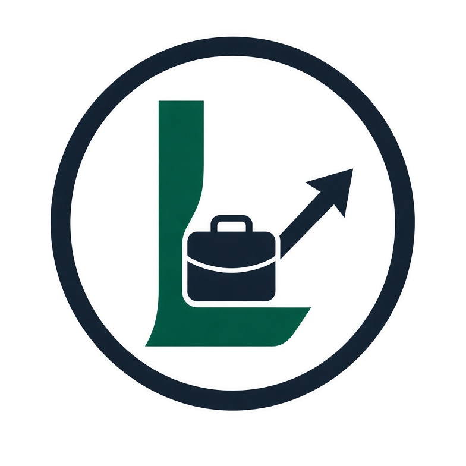

Visi kami
Menjadi ruang yang mudah diakses untuk mempertemukan pencari kerja, pemberi kerja, penyedia jasa, dan pelanggan.
Lokeria hadir untuk membuat peluang lebih mudah ditemukan—baik itu pekerjaan, layanan, produk, maupun kolaborasi yang dimulai dari kebutuhan sederhana.
Jelajahi peluang →
Kami ingin membantu orang menemukan jalan untuk bekerja, membantu, membangun, dan berkembang bersama—tanpa memandang besar atau kecilnya usaha mereka.
Lokeria dibangun di atas gagasan sederhana: hubungan yang tepat bisa membuka kesempatan baru.
Menjadi ruang yang mudah diakses untuk mempertemukan pencari kerja, pemberi kerja, penyedia jasa, dan pelanggan.
Membantu lebih banyak orang menemukan peluang, memperkenalkan layanan, serta membangun koneksi yang bermanfaat.
Terbuka terhadap berbagai skala usaha, menghargai keahlian, dan mendorong kolaborasi yang saling menguntungkan.
Temukan lowongan dari perusahaan besar hingga usaha kecil.
Perkenalkan kebutuhan tim, produk, atau layananmu.
Tawarkan keahlian, cari bantuan, atau mulai kolaborasi.
Jelajahi peluang dan lihat bagaimana Lokeria dapat menjadi awal koneksi baru.